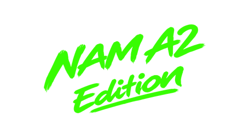

Neural Amp Modeler captures of real amps and pedals, running on the POD Go's own DSP as an amp block, with your drives, delays and reverbs either side.
Unofficial and experimental. Not made or supported by Line 6 or Yamaha Guitar Group. Installing modified firmware is at your own risk and may void your warranty. Back up first, and read Recovery below before you start.
A word from me on risk. Line 6 have commented on the mods now appearing for the HX Stomp, HX Effects and POD Go, and they seem encouraged that people are experimenting. That doesn't surprise me: the company was built that way. They have also warned against installing third-party firmware, because support will be very limited if something goes wrong. That is absolutely true. If you don't fully understand what you're installing, or you'd be uncomfortable bricking your unit, sleep on it. I talk about who this is for in the video: it's for tinkerers, the kind of folks who hang around on GitHub, the same folks who were modding Tube Screamers in the 80s. Just a heads-up: understand the risks before you start. ToneShift
No Line 6 files in this project. This repository and this page contain no Line 6 firmware, code or artwork. Everything that uses Line 6's work is made during the build, on your computer, from the official firmware file you download from Line 6: the NAM block is written into your own copy, the ToneShift boot screen is drawn over your own boot screen, and the six-snapshot tiles are drawn from your own firmware's snapshot images. Nothing you drop here is uploaded.
NAM A2 Lite sits in the amp list where Line 6 Elektrik was. Every other amp, cab, effect and IR is unchanged.
Convert a .nam file, import it with POD Go Edit like an IR, and pick it with the Model knob. Up to 101 at once.
Most captures include the cab, so the cab block can go and its DSP goes to effects.
Templates without cab, FX loop or fixed EQ: up to 7 effects around NAM, measured on the unit.
Back up your presets and IRs with POD Go Edit. Keep Line 6's official POD_Go_v2.50.0_0x6e984472.hxf somewhere safe: you build from it, and it is your way back.
Drop your stock file here. This page adds NAM A2 Lite (or, if you choose, just six snapshots) to it, in your browser, and gives you the new file to install. Nothing is uploaded: your firmware never leaves this computer, so no Line 6 code is ever shared.
For the HX Effects. Drop Line 6's stock HX_Effects_v3.80.0_0xd97239907.hxf (about 4 MB). NAM A2 Lite appears under Distortion > Mono, in place of Xenomorph Fuzz Mono (presets using that model open NAM instead; Xenomorph Fuzz Stereo stays). Up to three NAM blocks per preset. Captures go in User IR slots with HX Edit, picked with the Model knob; the knob pop-up shows the capture's name. HX Edit shows the block as "Xenomorph Fuzz".
No run from RAM on the HX Effects: install it with Line 6 Updater. Recovery: hold > while turning it on (update mode) and install the stock file with Line 6 Updater.

Shown over the stock POD Go boot screen. The overlay holds only this lettering; your POD Go supplies the rest.What it does. Hold the top-right MODE switch and the footswitches become six snapshot switches: bottom row 1 2 3, top row 4 5 6 (Bank Up and Bank Down become snapshots 4 and 1). The screen shows six tiles, the LED rings follow, and the top-right icon shows 5 and 6. Hold MODE again for the normal footswitches and banks. MIDI CC69 values 4 and 5 select snapshots 5 and 6.
Saving. Snapshots 5 and 6 are saved inside the preset when you save on the POD Go, and they survive a power-cycle. As with the stock snapshots, save while on each snapshot you change.
Why POD Go Edit can't see 5 and 6. POD Go Edit only knows about four snapshots, and this change lives in the POD Go itself. The editor still connects, edits and saves normally, and saving from the editor keeps 5 and 6, because the POD Go writes them. Anything that sends a whole preset from the computer replaces them, so 5 and 6 are lost:
To copy or move a preset that uses 5 and 6, save it to the new slot on the POD Go itself.
Two files, two jobs: the box above always takes Line 6's stock 2.50 file (every build starts from your own official copy, because Line 6's code can't be shared); the tick box below takes whatever your POD Go runs now, only if that isn't stock.
This page can run the firmware you just built from the POD Go's memory for one session. Nothing is written to the POD Go: turn it off and on and it starts what is installed, as before.
What you change during the run (presets, imported IRs) is gone when you turn the POD Go off, so import your captures with the normal firmware first. Knobs can react slowly from RAM; installed, they don't.
The first build downloads the build tools (about 15 MB) and takes 30–90 seconds. Keep this tab open until it finishes. It checks your file's fingerprint first, and at the end compares the result with the build the project tested on that unit: it says Verified only when every byte matches.
python3 -m venv .venv && .venv/bin/pip install -r requirements-dev.txt .venv/bin/python podgo/build_podgo.py POD_Go_v2.50.0_0x6e984472.hxf
The same build, plus a run of the NAM code in a SHARC simulator against a reference. It writes build/POD_Go_v2.50.0_NAM_A2_Lite.hxf, the same bytes as this page.
Quit POD Go Edit, open Line 6 Updater, choose Choose File and pick the built file. Don't unplug until it has restarted. Presets and IRs stay.
On the converter page: drop in NAM A2 Lite captures (48 kHz) and download the .wav files. Nothing is uploaded.
Import the .wav into an IR slot with POD Go Edit. In a preset choose NAM A2 Lite as the amp, set Model to the slot (0.0 = slot 1, 0.3 = slot 4) and turn the cab block off.
Import with POD Go Edit. The first three leave out the blocks NAM doesn't need (cab, FX loop, fixed EQ), so the DSP goes to effects; the next two keep the stock layout and drop only the FX loop (and the cab); NAM FX Loop keeps the FX loop for your own pedals, after NAM (off, on footswitch 1). NAM is on IR slot 4; the expression pedal runs volume, with the wah on the toe switch.
| Template | Chain | DSP units |
|---|---|---|
| NAM Blank | Volume, NAM; 9 empty blocks | 3,000 |
| NAM Essentials | Volume, Wah, Minotaur, NAM, Simple Delay, Plate | 5,411 |
| NAM Full Board | Volume, Deluxe Comp, Minotaur, NAM, Simple EQ, Chorus, Vintage Digital, Hall | 6,725 |
| NAM No FX Loop | Stock layout without the FX loop: Wah, Volume, NAM, Cab, EQ; for captures without a cab | 4,236 |
| NAM No FX Loop or Cab | Stock layout without the FX loop or cab: Wah, Volume, NAM, EQ | 3,636 |
| NAM FX Loop | Volume, Wah, NAM, FX Loop (off, footswitch 1); no cab or fixed EQ | 3,536 |
The unit's limits with fixed blocks removed: one each of amp, cab or IR, fixed EQ and FX loop; up to 7 other effects; blocks totalling about 8,000 units. NAM counts as 2,850.
POD Go Edit still shows the block as Line 6 Elektrik with Elektrik's knob names; the POD Go shows NAM's.
| On the POD Go | In POD Go Edit | What it does |
|---|---|---|
| Input | Drive | Level into the capture, ±20 dB; 5.0 = as recorded |
| Bass · Mid · Treble | Bass · Mid · Treble | Tone stack after the capture, ±12 dB each |
| High Cut | Presence | Top-end roll-off; 10 = open |
| Output | Ch Vol | Block volume; 5.0 = unity |
| Model | Master | The IR slot: (slot − 1) ÷ 10. With the names option it reads as the slot and its name |
| Mid Freq · Q | Sag · Ripple | Where the Mid knob works (150 Hz – 3 kHz) and how wide |
| Polarity | Bias X | Inverts the phase above 5.0 |
If the POD Go stops at the splash screen, or you want the normal firmware back: turn it off, hold Page > while you turn it on (update mode), then install the stock 2.50 file with Line 6 Updater's Choose File. The mod never touches the bootloader, so this always works.
HX Effects: turn it off, hold > (the right arrow) while you turn it on (update mode), then install the stock HX_Effects_v3.80.0_0xd97239907.hxf with Line 6 Updater's Choose File. The bootloader is untouched here too.